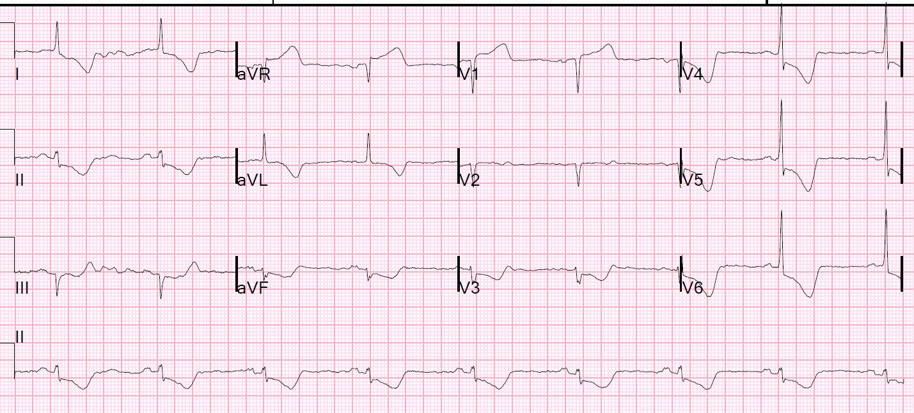
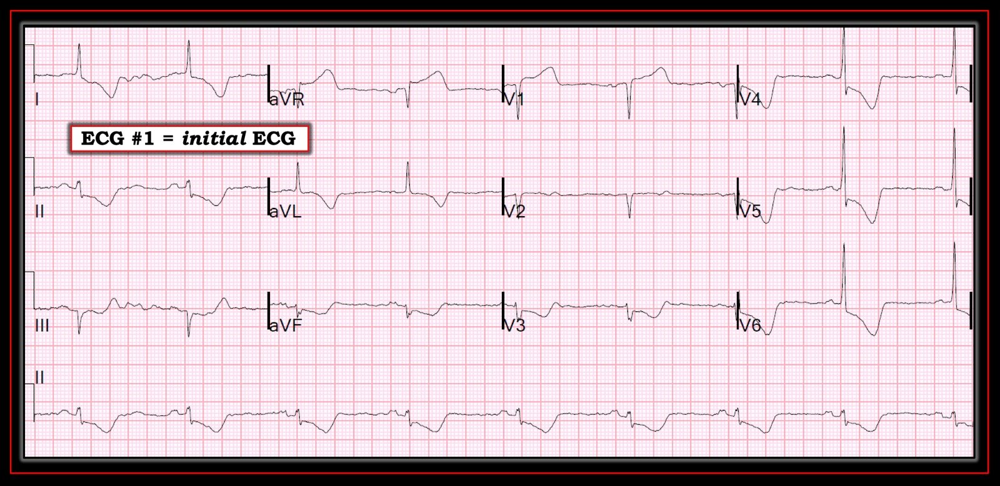

30/11/2018 — Bốn nguyên nhân sinh lý của sốc và ba nguyên nhân của sốc tim
Bản dịch tiếng Việt của bài "The 4 Physiologic Etiologies of Shock, and the 3 Etiologies of Cardiogenic Shock" – Dr. Smith’s ECG Blog. Giữ nguyên toàn bộ 4 hình ảnh của bản gốc.
Một bệnh nhân 60 mấy tuổi đến viện với hạ huyết áp, nhịp chậm, đau ngực và đau lưng.
Bà có tiền sử phình động mạch chủ, hở van động mạch chủ, bệnh mạch máu ngoại biên và tăng huyết áp. Bà mang van động mạch chủ cơ học. Bà đang dùng thuốc hạ huyết áp, trong đó có atenolol, và dùng coumadin, với INR là 2,3.
Bà trông có vẻ bệnh nặng. Huyết áp 70/49, mạch 60.
Siêu âm tim tại giường cho thấy phân suất tống máu tốt, thất phải bình thường và không có dịch màng ngoài tim.
Đây là điện tâm đồ ban đầu:


Điện tâm đồ này thực sự trông giống tắc thân chung động mạch vành trái (left main occlusion) (tình trạng hiếm khi đến được khoa cấp cứu (ED) khi còn sống): ST chênh lên ở aVR, nhưng cũng ở V1, và có vẻ như đoạn ST ở aVL có dạng “vòm” (coving), gợi ý ST cũng chênh lên ở chuyển đạo này.
Có nhịp chậm, đây là dấu hiệu đáng ngại ở một bệnh nhân nặng như vậy. Điều này có thể do atenolol, nhưng cũng có thể đơn giản chỉ là dấu hiệu của bệnh nặng.
Trong khi ST chênh lên ở aVR thường là soi gương (reciprocal) với ST chênh xuống của thiếu máu cục bộ dưới nội tâm mạc, với vectơ ST âm hướng về các chuyển đạo II và V5, và có thể kèm ST chênh lên (STE) ở V1 (cùng hướng với aVR), thì khi cũng có STE ở aVL điều đó hàm ý trục ST hướng thẳng lên trên nhiều hơn (được ủng hộ bởi ST chênh xuống ở tất cả II, III, aVF).
Khi trục ST hướng thẳng lên trên, có thể thực sự có thiếu máu cục bộ xuyên thành ở “đáy” tim (đáy thực ra là phần trên cùng của tim, nơi thực sự không có thành — các thất có các lỗ thông với nhĩ ở đáy, nên không có thành hoàn chỉnh). Tuy nhiên, các thành trước, bên, sau và vách đều có một phần phía trên, có thể gây ST chênh lên theo hướng lên trên nếu tất cả các thành đều bị thiếu máu cục bộ dưới thượng tâm mạc, như trong tắc thân chung động mạch vành trái.
Điều quan trọng cần nhớ là một điện tâm đồ như thế này biểu hiện khả năng tắc thân chung động mạch vành trái chỉ khi nó là hậu quả của hội chứng vành cấp (ACS)!!
Knotts và cs. nhận thấy các dấu hiệu điện tâm đồ như vậy chỉ biểu hiện ACS thân chung ở 14% số điện tâm đồ như thế:
Chỉ 23% bệnh nhân có hình ảnh STE ở aVR có bất kỳ bệnh lý thân chung (LM) nào (còn ít hơn nếu định nghĩa là hẹp ≥ 50%). Chỉ 28% bệnh nhân có ACS ở bất kỳ nhánh mạch nào, và trong số đó, thân chung là thủ phạm chỉ ở 49% (14% của toàn bộ các trường hợp). Đây là dấu hiệu nền sẵn có ở 62% bệnh nhân, thường do LVH.
Tài liệu tham khảo: Knotts RJ, Wilson JM, Kim E, Huang HD, Birnbaum Y. Diffuse ST depression with ST elevation in aVR: Is this pattern specific for global ischemia due to left main coronary artery disease? J Electrocardiol 2013;46:240-8.
Ca bệnh tiếp diễn:
X-quang ngực phù hợp với phù phổi, và siêu âm cho thấy tĩnh mạch chủ dưới “căng đầy” (plump). (Tất cả dữ liệu này phù hợp với áp lực đổ đầy cao ở cả tim phải và tim trái, là dấu hiệu đặc trưng của sốc tim (cardiogenic shock) — không phải sốc tắc nghẽn, sốc phân bố hay sốc giảm thể tích)
Bóc tách động mạch chủ đã được cân nhắc (với tổn thương các động mạch vành và tắc nghẽn đường ra động mạch chủ), nhưng chụp CT âm tính với bóc tách.
Phòng thông tim (cath lab) đã được kích hoạt.
Câu chuyện rất dài, nhưng tôi sẽ kể ngắn gọn:
Không thể chụp mạch vành vì không tiếp cận được hệ động mạch (không rõ lý do).
Bác sĩ can thiệp nghe tim và nghe thấy cả tiếng thổi tâm thu do dòng chảy qua van lẫn tiếng thổi tâm trương.
Siêu âm tim chính thức cho thấy hở van động mạch chủ, sau đó siêu âm tim qua thực quản (TEE) cho thấy một khối trên van động mạch chủ, và phẫu thuật thăm dò cho thấy huyết khối van động mạch chủ.
Đây không phải ACS. Đây không phải tắc thân chung động mạch vành trái.
Bình luận:
Sốc có 4 nguyên nhân cơ bản:
1. Tắc nghẽn (thuyên tắc phổi, tràn khí màng phổi áp lực, chèn ép tim, u nhầy nhĩ, v.v.)
Tất cả các nguyên nhân này đều đã được loại trừ
2. Phân bố (nhiễm khuẩn huyết, do thần kinh, bệnh beriberi, v.v.). Bệnh nhân không có dấu hiệu nào của tình trạng cung lượng cao
3. Giảm thể tích (mất nước, xuất huyết, thoát dịch ra khoang thứ ba) Tĩnh mạch chủ dưới (IVC) căng đầy
4. Do tim — thủ phạm có khả năng nhất
Sốc tim có 3 nguyên nhân sinh lý cơ bản:
1. Chức năng bơm kém (tâm trương hoặc tâm thu) Siêu âm tim tại giường cho thấy chức năng bơm tốt, dù điều đó không loại trừ hoàn toàn rối loạn chức năng tâm trương.
2. Rối loạn nhịp (quá nhanh hoặc quá chậm để đổ đầy và bơm máu đầy đủ) Chỉ có nhịp chậm nhẹ
3. Do van. Bơm vẫn hoạt động nhưng máu đi sai hướng. Đây là nguyên nhân còn lại: Nguyên nhân do van thường bị bỏ quên. Bất kỳ rối loạn chức năng van nào cũng có thể gây sốc, đặc biệt là van động mạch chủ, van hai lá hoặc van ba lá (tôi chưa từng gặp ca nào rối loạn chức năng van động mạch phổi cấp tính và tìm kiếm sơ bộ cũng không thấy gì)
Huyết khối van động mạch chủ cần được cân nhắc ở bất kỳ bệnh nhân nào mang van động mạch chủ nhân tạo, đặc biệt là van cơ học. Đây là một biến chứng thảm khốc, và đó là lý do chúng ta rất cẩn trọng duy trì INR điều trị ở mức cao cho những bệnh nhân này.
Có thể nói ca này là dạng lai giữa sốc tim và sốc tắc nghẽn, nhưng vì tất cả đều do van, ta hãy gọi nó là sốc tim.
Chỉ cần nói rằng nên nghi ngờ huyết khối van ở những bệnh nhân mang van nhân tạo có:
1. Khó thở
2. Suy tim mới xuất hiện hoặc nặng lên
3. Hạ huyết áp hoặc sốc
Nên nghe xem tiếng tim có mờ hoặc có tiếng thổi mới không, nhưng dấu hiệu này không nhạy.
Nên đặc biệt nghi ngờ nếu INR không đạt mục tiêu:
2,5 – đối với van động mạch chủ cơ học hai cánh hoặc van đĩa nghiêng đơn thế hệ hiện nay là 2,5 nếu bệnh nhân không có yếu tố nguy cơ thuyên tắc huyết khối
3,0 – nếu bệnh nhân mang van cơ học kiểu bi-lồng (vì nguy cơ huyết khối đi kèm cao hơn) hoặc có yếu tố nguy cơ thuyên tắc huyết khối như rung nhĩ, rối loạn chức năng tâm thu thất trái, tiền sử thuyên tắc huyết khối hoặc tình trạng tăng đông.
3,0 – (khoảng 2,5 đến 3,5) đối với bệnh nhân mang van hai lá cơ học
3,5 đến 4,0 – đối với bệnh nhân mang van ba lá cơ học.
Có thể cần siêu âm tim qua thực quản để chẩn đoán.
Luôn nghĩ đến việc làm Doppler các van khi siêu âm tại giường (POCUS). Không quá khó để thấy dòng hở. Nếu đã thấy được điều đó, chẩn đoán đã được đưa ra sớm hơn nhiều.
Các biến chứng của huyết khối van động mạch chủ tất nhiên bao gồm tắc nghẽn nặng đường ra động mạch chủ (kèm sốc), hở van động mạch chủ và dòng phụt ngược, và thuyên tắc tới bất kỳ động mạch nào trong cây động mạch, gây đột quỵ, nhồi máu cơ tim hoặc nhồi máu thảm khốc khác.
Sự kết hợp giữa tắc nghẽn đường ra (giảm cung lượng tim) và dòng hở (huyết áp tâm trương thấp) dẫn đến thiếu máu cục bộ mạch vành nặng. Các động mạch vành được tưới máu trong thì tâm trương, khi cơ tim không co bóp.
Không cần viết thêm về biến chứng này, vì đã có nhiều bài viết hay về chủ đề này. Xem bài này:
https://www.mayoclinic.org/medical-professionals/cardiovascular-diseases/news/prosthetic-valve-thrombosis-time-is-critical/mac-20430866 (Huyết khối van nhân tạo: thời gian là yếu tố then chốt)

———————————————————–
Bình luận của KEN GRAUER, MD (30/11/2018):
———————————————————–
Một ca thú vị với phần bàn luận xuất sắc và lời nhắc nhở đúng lúc của Dr. Smith về các nguyên nhân chính của sốc và sốc tim. Tôi giới hạn bình luận của mình ở điện tâm đồ ban đầu, được tôi vẽ lại cho rõ ở Hình 1.
==========================


==========================
Cách tôi đọc điện tâm đồ ở Hình 1 như sau:
- Nhiễu đường nền. Nhiễu rõ nhất ở chuyển đạo I và III, gợi ý nguyên nhân có thể từ chi trên bên phải.
- Nhịp chậm xoang với tần số trên 50/phút một chút. Tất cả các khoảng (PR, QRS, QT) đều bình thường. Trục hơi lệch trái, nhưng chưa đủ lệch trái để đạt tiêu chuẩn LAHB (vì phức bộ QRS vẫn chủ yếu dương ở chuyển đạo II).
- Có lẽ LVH (Xem bên dưới).
- ST-T chênh xuống lan tỏa, với sóng T đảo ngược đặc biệt sâu ở các chuyển đạo V4 đến V6 — và sóng T hai pha ở các chuyển đạo III, aVF và V3. ST chênh lên đáng kể ở aVR và V1, với đỉnh sóng T đầy đặn hơn mức bình thường ở các chuyển đạo này, và hình dạng ST-T ở aVR và V1 trông như “soi gương” với ST-T chênh xuống ở nhiều chuyển đạo khác.
==========================
NHẬN ĐỊNH: Nhịp chậm xoang với có lẽ LVH + thay đổi ST-T gợi ý “tăng gánh” thất trái + thiếu máu cục bộ dưới nội tâm mạc lan tỏa. Đề nghị đối chiếu lâm sàng.
- Tại sao “có lẽ” LVH? Điện tâm đồ là một công cụ không hoàn hảo để đánh giá LVH. Tốt nhất thì độ nhạy của điện tâm đồ trong phát hiện LVH cũng không quá 55%. Siêu âm tim vượt trội hơn hẳn điện tâm đồ trong đánh giá lớn các buồng tim. Dù vậy, khi bối cảnh lâm sàng “phù hợp” — và đạt tiêu chuẩn điện thế của LVH — và có thay đổi tái cực ST-T của “tăng gánh” thất trái — thì độ đặc hiệu của điện tâm đồ trong phát hiện LVH có thể hơn 90-95%! Phải thừa nhận rằng tiêu chuẩn điện thế của LVH không đạt ở Hình 1 (tức là sóng R ở chuyển đạo V6 chưa đạt mức 18-20 mm cần có ở chuyển đạo này). Nhưng, với bối cảnh lâm sàng có tỷ lệ mắc cao (tức là bệnh nhân này đã biết có tăng huyết áp cộng với hở van động mạch chủ) + biên độ sóng R ở V6 gần đủ (16 mm) + thay đổi ST-T phù hợp với “tăng gánh” thất trái ở tất cả các chuyển đạo bên (tức là các chuyển đạo I, aVL, V4-6) — thì nhiều khả năng thực sự có LVH về mặt buồng tim (BẤM VÀO ĐÂY — để biết thêm về chẩn đoán LVH trên điện tâm đồ).
- Sẽ cực kỳ thú vị nếu được xem một điện tâm đồ nền của bệnh nhân này, ghi vào lúc bà không ở trong tình trạng sốc tim cấp! PHỎNG ĐOÁN của tôi về những gì một điện tâm đồ “nền” như vậy ở bệnh nhân này sẽ cho thấy là: i) thay đổi ST-T của “tăng gánh” thất trái ở cùng 5 chuyển đạo bên với hình dạng ST-T tương tự nhau, nhưng điểm J chênh xuống ít hơn mức 2-4 mm thấy ở các chuyển đạo V4 đến V6 trong Hình 1; ii) ST chênh lên ở aVR và V1 ít hơn nhiều (nếu có); iii) có thể sóng T dương ở chuyển đạo V2, với hình dạng soi gương với ST-T chênh xuống thấy ở các chuyển đạo ngực bên trong Hình 1 (tức là “tăng gánh” thất trái thường tạo ra ST-T dương hình soi gương ở các chuyển đạo trước, so với ST-T chênh xuống thấy ở các chuyển đạo ngực bên); iv) ST chênh xuống ở II, III, aVF và V3 ít hơn nhiều (nếu có) (và mất sóng T hai pha); và, v) có thể biên độ sóng R ở các chuyển đạo ngực bên lớn hơn (đôi khi thiếu máu cục bộ làm giảm biên độ sóng R … ).
- Khi không có được “điện tâm đồ nền” của bệnh nhân này — chúng ta chỉ còn cách phỏng đoán có cơ sở xem dấu hiệu điện tâm đồ nào ở Hình 1 là “mới” hay “cũ” hay “mới chồng lên cũ”. Linh cảm của tôi là những gì chúng ta thấy ở Hình 1 là sự kết hợp của LVH có từ lâu kèm “tăng gánh” thất trái + chồng thêm thiếu máu cục bộ dưới nội tâm mạc lan tỏa ở bệnh nhân bị sốc tim cấp do biến chứng của bệnh van tim này. Thông tim lẽ ra đã cho chúng ta biết liệu có bệnh mạch vành nền đáng kể cũng góp phần gây thiếu máu cục bộ dưới nội tâm mạc hay không.
Chúng tôi xin CẢM ƠN Dr. Smith đã trình bày ca bệnh thú vị này.